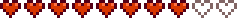

Penny
| Penny | |
 | |
| Information
| |
| Geburtstag | |
| Lebt in | Pelikan Stadt |
| Adresse | Wohnwagen |
| Familie |
|
| Ehe | Ja |
| Klinikbesuch | |
| Beste Geschenke | |
| “ | “Penny lebt mit ihrer Mutter, Pam, in einem kleinen Wohnwagen am Fluss. Während Pam sich im Saloon rum treibt, kümmert sich Penny um ihren düsteren, stickigen Raum, den sie gezwungenermaßen ihr Zuhause nennt. Sie ist schüchtern und bescheiden, ohne große Ziele im Leben, außer sich zur Ruhe zu setzen und eine Familie zu gründen. Sie liebt es zu kochen (auch wenn ihr Können äußerst fragwürdig ist) und Bücher aus der örtlichen Bibliothek zu lesen.” |
| — Dev Update #12 |
Penny ist eine Dorfbewohnerin die in Pelikan Stadt lebt. Sie ist eine von den zwölf Kandidaten, die man heiraten kann. Ihr Wohnwagen befindet sich östlich des Stadtzentrums, westlich des Flusses.
Tagesablauf
Penny kann meistens lesend in der Stadt, oder putzend in ihrem Wohnwagen, den sie sich mit Pam teilt, gefunden werden. Dienstags, Mittwochs und Freitags unterrichtet Sie Jas und Vincent im Museum und begleitet beide anschließend nach Hause. An Samstagen geht sie mit ihnen zum Dorfspielplatz.
Während es regnet befindet sich Penny entweder in ihrem Wohnwagen oder im Museum, wo sie sich nach Büchern umschaut.
|
Regulärer Tagesablauf
|
|
Tagesablauf
Sonniges Wetter
Montag (Sonniges Wetter)
Dienstag (Sonniges Wetter)
Mittwoch (Sonniges Wetter)
Donnerstag (Sonniges Wetter)
Freitag (Sonniges Wetter)
Samstag (Sonniges Wetter)
Sonntag (Sonniges Wetter)
|
|
Sonntag, Montag, Donnerstag
Dienstag, Mittwoch, Freitag
Samstag
|
|
Regulärer Tagesablauf
Samstag
Winter (Gemeinschaftszentrum erneuert)
4. Tag Winter
|
| Abweichungen | ||||||||||||||||||||||||||||||||||||
|---|---|---|---|---|---|---|---|---|---|---|---|---|---|---|---|---|---|---|---|---|---|---|---|---|---|---|---|---|---|---|---|---|---|---|---|---|
| Ihr Tagesablauf kann abweichen, wenn bestimmte Bedingungen wie Jahreszeit, Wetter oder bestimmte Wochentage eintreffen.
Tag 9 & Tag 23 (Mit weniger als 6 Herzen mit Sam)
Regen
Regen (Jahr 2)
|
|
Beziehungen
Penny lebt zusammen mit ihrer Mutter Pam. Sie ist ebenfalls mit Sam befreundet.
Zudem unterrichtet sie die Kinder im Dorf, Jas und Vincent im Museum immer Dienstags, Mittwochs und Donnerstags(außer im Sommer) und nimmt die beiden manchmal auf den Spielplatz mit.
Geschenke
- Hauptartikel: Freundschaft
- Siehe auch: Liste aller Geschenke
Du kannst Penny bis zu zwei Geschenke pro Woche geben (plus eines an
ihrem
Geburtstag), die deine Freundschaft mit
ihr
erhöht oder senkt. Geschenke zu
ihrem
Geburtstag ( 2 Herbst) haben 8-fache Wirkung und lösen einen einzigartigen Dialog aus.
2 Herbst) haben 8-fache Wirkung und lösen einen einzigartigen Dialog aus.
Bei beliebten Geschenken wird Penny sagen
| “ | “Oh! Ist das für mich? Für... für meinen Geburtstag? *schnief*... Tut mir leid. Ich bin... solche Freundlichkeit einfach nicht gewohnt... ... Mir gefällt es aber. Es ist perfekt. Ich danke dir vielmals.” |
Bei gemochten oder neutralen Geschenken wird Penny sagen
| “ | “Zu meinem Geburtstag? Das ist so nett von dir! Das ist ein tolles Geschenk.” |
Bei unbeliebten oder gehaßten Geschenken wird Penny sagen
| “ | “Zu meinem Geburtstag? Das ist so nett von dir! Lass es mich auspacken ... ... Was!? ... Oh, ich verstehe. Das ist ein schlechter Scherz. Wie dumm von mir, ich hätte es besser wissen müssen...” |
Liebt
| “ | “Danke dir! Ich steh total auf sowas!” |
| Bild | Name | Beschreibung | Quelle | Zutaten |
|---|---|---|---|---|
| ||||
| Diamant | Ein seltener und wertvoller Edelstein. | Minen | ||
| Smaragd | Ein wertvoller Stein mit einer brillanten grünen Farbe. | Minen | ||
| Melone | Ein kühler, süßer Sommerleckerbissen. | Hofarbeit - Sommer | ||
| Mohn | Zusätzlich zu seiner farbenfrohen Blume hat Mohn kulinarische und medizinische Anwendungsmöglichkeiten. | Hofarbeit - Sommer | ||
| Mohnmuffin | Hat einen beruhigenden Effekt. | Kochen | ||
| Rote Platte | Voller Antioxidantien. | Kochen | ||
| Wurzelplatte | Danach willst du definitiv noch mehr buddeln. | Kochen | ||
| Sandfisch | Er versucht, sich mit seiner Tarnung zu verstecken. | Fischen | ||
| Tom Kha-Suppe | Die verschiedenen Aromen sind unglaublich! | Kochen | ||
Mag
| “ | “Danke dir! Das sieht speziell aus.” |
| Bild | Name | Beschreibung | Quelle |
|---|---|---|---|
| |||
| Löwenzahn | Nicht die schönste Blume, aber die Blätter geben einen guten Salat ab. | Sammeln - Frühling | |
| Lauch | Ein leckerer Verwandter der Zwiebel. | Sammeln - Frühling | |
Neutral
| “ | “Danke, sieht nett aus.” |
| Bild | Name | Beschreibung | Quelle |
|---|---|---|---|
| |||
| Pfifferling | Ein leckerer Pilz mit fruchtigem Duft und leicht pfeffrigem Geschmack. | Sammeln - Herbst | |
| Gewöhnlicher Pilz | Leicht nussig und von guter Konsistenz. | Sammeln - Herbst | |
| Narzisse | Eine traditionelle Frühlingsblume, die ein nettes Geschenk abgibt. | Sammeln - Frühling | |
| Ingwer | Diese scharfe, würzige Wurzel soll die Vitalität steigern. | Sammeln - Ingwerinsel | |
| Haselnuss | Das ist eine große Haselnuss! | Sammeln - Herbst | |
| Magmahut | Ein sehr seltener Pilz, der neben Lavatümpeln lebt. | Sammeln - Vulkan-Dungeon | |
| Morchel | Begehrt für ihren einzigartigen, nussigen Geschmack. | Sammeln - Frühling | |
| Schnee-Süßkartoffel | Diese kleine Süßkartoffel hat sich unter dem Schnee versteckt. | Sammeln - Winter | |
| Wilder Meerrettich | Würzige Wurzeln, die im Frühling gefunden werden können. | Sammeln - Frühling | |
| Winterwurzel | Eine stärkehaltige Knolle. | Sammeln - Winter | |
*Beachte, dass verschenkte Dinosaurier-Eier als Artefakte und nicht Eier gelten.
Mag Nicht
| “ | “Äh, ist das für mich? ... Danke.” |
| Bild | Name | Beschreibung | Quelle | Zutaten |
|---|---|---|---|---|
| ||||
| Algensuppe | Ein wenig schleimig. | Kochen | ||
| Entenfeder | Schau dir die Farben an. | Ente | ||
| Bleiche Brühe | Eine feine Brühe mit einem Hauch von Schwefel. | Kochen | ||
| Violetter Pilz | Ein seltener Pilz, der tief in den Höhlen zu finden ist. | Sammeln - Minen | ||
| Quarz | Ein klarer Kristall, der häufig in Höhlen und Minen gefunden wird. | Sammeln - Minen | ||
| Roter Pilz | Ein gepunkteter Pilz, der manchmal in Höhlen zu finden ist. | Sammeln | ||
| Lachsbeere | Eine Frühlingsbeere mit dem Geschmack des Waldes. | Sammeln - Frühling | ||
| Wolle | Weiche, flauschige Wolle. | Hase, Schaf | ||
Hasst
| “ | “Ugh... Tut mir leid, aber ich hasse das total.” |
| Bild | Name | Beschreibung | Quelle | Zutaten |
|---|---|---|---|---|
| ||||
| Bier | In Maßen genießen. | Fass Kneipe zum Sternenfall |
||
| Weintraube | Eine süße Ansammlung von Früchten. | Hofarbeit, Sammeln | ||
| Stechpalme | Die Blätter und grellroten Beeren sind eine beliebte Winterdekoration. | Sammeln - Winter | ||
| Hopfen | Eine bittere, würzige Blume, die Bier seinen Geschmack verleiht. | Hofarbeit | ||
| Met | Gegärtes Getränk aus Honig. In Maßen trinken. | Fass | ||
| Helles Bier | In Maßen genießen. | Fass | ||
| Piña Colada | Getränk in Maßen genießen. | Strandresort an Sonntagen | ||
| Hasenpfote | Manche sagen, er bringe Glück. | Hase | ||
| Wein | In Maßen genießen. | Fass | Irgendwelche Früchte (1) | |
Filme und Snacks
- Hauptartikel: Kino
|
|
Herz Events
Zwei Herzen

Geh in die Stadt an einem sonnigen Tag zwischen 9:00 und 14:00 Uhr.
| Details |
|---|
George schaut in seinen Briefkasten und fragt sich, wie er an den Brief ran kommen soll, der ganz hinten drin liegt. Penny kriegt dies mit und holt den Brief für ihn heraus. George ist verärgert darüber als hilflos dazustehen und schelt Penny für ihre Hilfe. Penny sieht dich und fragt ob du sie beobachtet hast.
Unabhängig von der zu wählenden Antwort, seufzt George und entschuldigt sich bei Penny dafür, dass er so wütend geworden ist. Er sagt, dass es sehr nett von ihr gewesen ist, ihm zu helfen. Penny erwidert, dass sie das versteht. Nachdem George weg ist, sagt Penny das es sehr schwer sein muss alt zu werden.
Penny verabschiedet sich von dir und das Event endet. |
Vier Herzen

Betritt den Wohnwagen wenn sie zu Hause ist.
| Details |
|---|
| Penny beschwert sich darüber, wie unordentlich der Wohnwagen ist und fragt, ob du ihr beim Aufräumen helfen könntest. Währenddessen kehrt Pam nach Hause zurück und schreit Penny an, dass der Wagen von jemand anderem gereinigt wurde. Pam bittet dich schließlich zu gehen und sie setzen ihre Diskussion privat fort. Pam gibt zu, dass es ihr peinlich ist, dass Fremde das Haus aufräumen. Am nächsten Tag bekommst du einen Entschuldigungsbrief von Penny. |
Sechs Herzen

Betritt den Wohnwagen wenn sie zu Hause ist.
| Details |
|---|
Penny fragt dich ein Rezept zu probieren, das sie erfunden hatte.
Unabhängig von deiner Wahl lädt sie dich ein, gemeinsam einen Film anzusehen. |
Acht Herzen

Geh in den Zundersaftwald zwischen 9 und 16 Uhr.
| Details |
|---|
Penny ist mit Jas und Vincent auf einem Ausflug. Sie fragt dich, ob du als Gastredner sprechen möchtest und deine Erfahrung über das Landleben mit den Kindern teilst.
Wenn du zustimmst, kommen ein paar Dialog-Optionen die keine Auswirkung auf eure Freundschaft haben. Danach schickt Penny die Kinder zum spielen und fragt dich, ob du auch mal Kinder haben möchtest.
Sie bedankt sich bei dir und die Szene endet. |
Zehn Herzen

Du bekommst einen Brief von Penny, danach musst du in den Poolbereich des Spa zwischen 19 Uhr und Mitternacht.
| Details |
|---|
Penny kommt in den Poolbereich und fragt ob du weißt wieso sie dich hier her eingeladen hat.
Penny gesteht dir Ihre Gefühle.
|
Gruppe Zehn Herzen Event

Wenn der Spieler unverheiratet ist, allen verfügbaren Junggesellinnen einen Blumenstrauß geschenkt hat, sowie mit jeder eine 10 Herzen Freundschaft, jedes 10-Herz-Ereignis gesehen hat und anschließend zu Haley/Emilys Haus geht, löst das eine Zwischensequenz aus.
| Details |
|---|
| Hat der Spieler eine Hasenpfote im Inventar, dann besteht die Zwischensequenz aus einer Klatsch-Szene über die Beziehung vom Bürgermeister Lewis und Marnie.
Hat der Spieler keine Hasenpfote im Inventar, drücken alle Junggesellinnen ihren Ärger über den Spieler aus, der sich gleichzeitig mit allen von ihnen getroffen hat. Egal welche Dialogauswahl der Spieler trifft, entscheiden sich alle Junggesellinnen dazu, dem Spieler die "kalte Schulter" zu zeigen, für eine Woche. Sie führen einen wütenden Dialog, wenn der Spieler mit ihnen interagiert, und lehnen Geschenke ab. Nach etwa einer Woche vergeben alle Junggesellinnen dem Spieler und die Dialoge werden wieder normal. |
Dieses Event wird nur einmal pro gespeichertes Spiel ausgelöst.
Vierzehn Herzen

Betritt das Farmhaus zwischen 15 und 19 Uhr während sie sich dort befindet.
| Details |
|---|
Penny sagt "Willkommen zuhause, Schatz... Wie war dein Tag?"
Penny sagt dann, dass sie das Schlafzimmer mit ihrem handgefertigtem Dekor neu dekorieren will. Sie fragt welchen Stil du bevorzugst.
Penny sagt, sie wird keine deiner Kisten Berühren wird, aber fragt ob du sie aus dem Schlafzimmer holen könntest.
Teil 2: Wenn du Penny umdekorieren lässt wird das Schlafzimmer 3 Tage später beim aufwachen in dem ausgewählten Stil sein. Notiz, dass die die Art, Anzahl und Plazierung der Items je nach Bauernhaus Upgrade etwas variieren kann.
Durch jede Auswahl gibt es einzigartige Dekorationen, die sonst nicht verfügbar sind:
|


Ehe

Sobald man verheiratet ist, wird Penny in das Bauernhaus ziehen und anfangen am Dienstag, Mittwoch und Freitag im Museum zu arbeiten. Wie andere Heiratskandidaten wird sie ihr eigenes Zimmer am Schlafzimmer hinzufügen. Dieses Zimmer ist eine kleine Bibliothek. Sie wird außerdem eine kleine Topfpflanze im Garten hinter dem Bauernhaus hinstellen. Dort wird sie zum Lesen hingehen.
- 1: Bei 12 Herzen wird sie auf dem Hof helfen, wenn sie nicht arbeitet.
Sie wird:
- Nutzpflanzen bewässern
- den Haustiernapf auffüllen
- Tiere füttern
- Zäune reparieren
- 2: Sie wird außerdem gelegentlich Frühstück machen. Es wird ein zufälliges Frühstück deinem Inventar zugefügt. Sollte dein Inventar voll sein, wirst du das Frühstück nicht bekommen.
Ein paar der möglichen Frühstücke sind:
- Kartoffelpuffer (90 Energie, 90 Gesundheit, +1 Hofarbeit)
- Pfannkuchen (90 Energie, 36 Gesundheit, +2 Sammeln)
- Omelett (100 Energie, 40 Gesundheit)
- 3: Weniger oft wird Penny sagen, dass sie einkaufen war und dir etwas mitgebracht hat.
Ein paar der möglichen Objekte sind:
- 4: Sie wird dir eine Sternenfall-Frucht als Liebesbeweis geben.
Bekomme deine Penny auf 13/12 Herzen und rede mit ihr in eurem Zuhause. Sie wird über das Leben auf der Farm reden und wie sie es genießt, dann gibt sie dir die Sternenfall-Frucht als Dank.
Aufträge
- Penny sucht zufällig Gegenstände an der "Hilfe gesucht" Tafel an Pierres Gemischtwarenladen. Die Belohnung entspricht 3x dem Wert des Gegenstandes und 150 Freundschaftspunkte.
Portraits


Zeitstrahl
Das Aussehen von Penny hat sich über die Jahre der Entwicklung verändert. Hier ist ein Zeitstrahl der die Veränderung von ConcernedApes Stil und Pennys Aussehen vor der Erscheinung des Spiels zeigt.

Veränderungen
- 1.0: Einführung.
- 1.1: Platz zum lesen hinter dem Bauernhaus wenn verheiratet wurde hinzugefügt.
| Dorfbewohner | |
|---|---|
| Junggesellen | Alex • Elliott • Harvey • Sam • Sebastian • Shane |
| Junggesellinnen | Abigail • Emily • Haley • Leah • Maru • Penny |
| Stadtbewohner | Caroline • Clint • Demetrius • Evelyn • George • Gil • Gunther • Gus • Jas • Jodi • Kent • Lewis • Linus • Marlon • Marnie • Morris • Pam • Pierre • Robin • Vincent • Willy |
| Andere | Alter Seemann • Birdie • Gefolgsmann • Gouverneur • Junimos • Krobus • Leo • Mr. Qi • Opa • Professor Schnecke • Sandy • Türsteher • Zauberer • Zwerg |